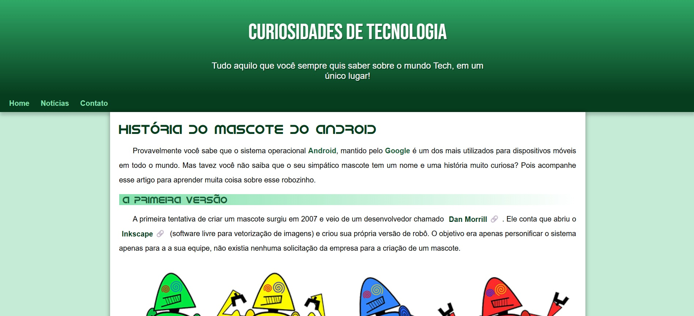
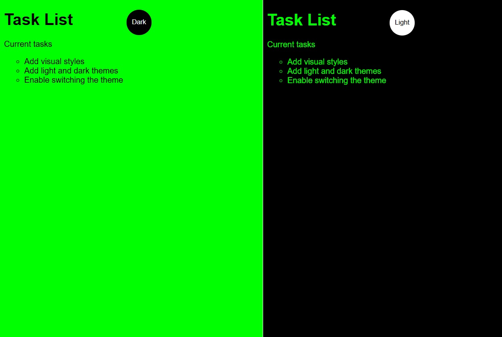
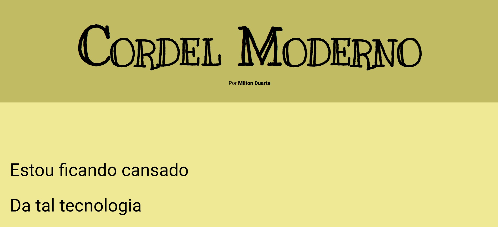
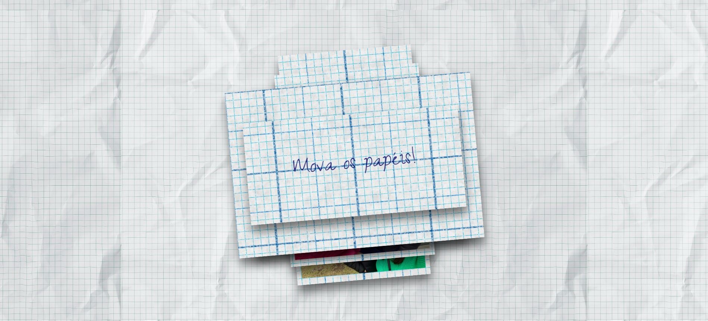
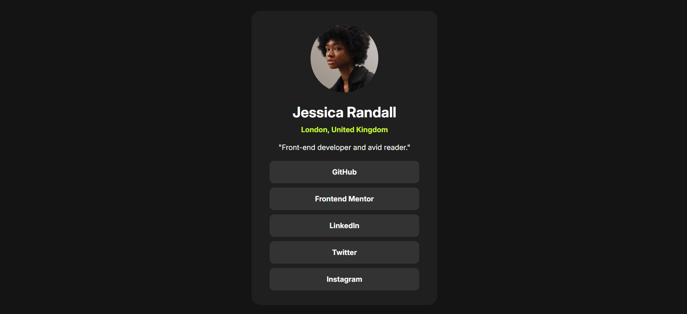

PROJETOS
Aqui estão alguns dos projetos que desenvolvi recentemente, demonstrando minhas habilidades em desenvolvimento web.
Site Responsivo (clique aqui)

Este é o meu primeiro projeto de site responsivo, desenvolvido como parte das aulas do Módulo 2 doCurso em Vídeo administrado por Gustavo Guanabara. O objetivo foi praticar HTML5 e CSS3 com foco em responsividade, adaptando o conteúdo para diferentes tamanhos de tela.
Tema Escuro (clique aqui)

Este projeto consiste em um site simples desenvolvido utilizando apenasHTML, CSS e JavaScript puro, sem a utilização de frameworks ou bibliotecas externas. O objetivo é servir como base para quem está começando no desenvolvimento web ou deseja criar páginas rápidas e eficientes.
Cordel Moderno (clique aqui)

Este projeto é uma adaptação moderna de um cordel tradicional, utilizando recursos deHTML5 e CSS3 para criar uma experiência de leitura envolvente e interativa.
Love (clique aqui)

Este projeto foi criado para explorar conceitos de desenvolvimento web, automação, integração de diferentes linguagens de programação e boas práticas de software. É um ambiente experimental e colaborativo, aberto para sugestões e melhorias.
Links Sociais (clique aqui)

Aplicação simples e responsiva para reunir todos os seus links em um só lugar, como um cartão de visitas digital. Inspirado em ferramentas como Linktree, mas desenvolvido do zero com HTML e CSS.
É um ambiente experimental e foi desenvolvido apenas para treino.